1. Las funciones con cuerpos de función vacíos
se pueden utilizar como apéndices. ¿Cómo modificas este tipo de función para que sea más útil?
1. Las funciones con cuerpos de función vacíos
se pueden utilizar como apéndices. ¿Cómo modificas este tipo de función para que sea más útil?Hay muchas similitudes entre las funciones de C y las funciones de otros lenguajes (o procedimientos, métodos). Así que hasta ahora, aunque solo hemos tenido una pequeña discusión informal sobre las funciones, ya puedes usarlas. Sin embargo, algunos aspectos de las funciones no son tan intuitivos como deberían ser, por lo que este capítulo describirá formalmente las funciones C.
La definición de una función es la realización del cuerpo de la función. El cuerpo de una función es un bloque de código que se ejecuta cuando se llama a la función. A diferencia de las definiciones de función, las declaraciones de función aparecen donde se llama a la función. La declaración de función proporciona información sobre la función al compilador para garantizar que la función se llame correctamente. Veamos primero la definición de la función.
La sintaxis de la definición de función es la siguiente:
escribe
Nombre de la función ( parámetro formal )
Bloque de código
Recuerde que el bloque de código es un par de llaves, que contienen algunas declaraciones y declaraciones (ambas son opcionales). Por lo tanto, la función más simple se parece a esto:
function_name()
{
}Cuando se llama a esta función, simplemente regresa. Sin embargo, puede lograr un objeto stub útil (Stub), una posición reservada para el caso de que no se haya logrado el código. Escribir tales stubs, o "ocupar un lugar" para el código que aún no se ha escrito, puede mantener la integridad estructural del programa para que pueda compilar y probar otras partes del programa.
La lista de parámetros formales incluye nombres de variables y sus declaraciones de tipo. El bloque de código contiene la declaración de variables locales y las declaraciones que deben ejecutarse cuando se llama a la función. El procedimiento 7.1 es un ejemplo de una función simple.
Separar el tipo de función y el nombre de la función en dos líneas es puramente una cuestión de estilo. Esta forma de escribir puede facilitarnos la búsqueda del nombre de la función cuando usamos visión o algunas herramientas para rastrear el código fuente.
K&R C
En K&R C, los tipos de parámetros formales se declaran en una lista separada y aparecen entre la lista de parámetros y la llave de apertura del cuerpo de la función, como se muestra a continuación:
int *
find_int(key, array, array_len)
int key;
int array[];
int array_len;
{Esta forma de declaración todavía está permitida por el estándar, principalmente para permitir que los programas más antiguos se compilen sin modificaciones. Pero debemos promover el nuevo estilo de declaración por dos razones: Primero, elimina la redundancia del estilo antiguo. En segundo lugar, y lo que es más importante, permite el uso de prototipos de funciones y mejora la capacidad del compilador para comprobar si hay errores durante las llamadas a funciones. Con respecto al prototipo de función, lo discutiremos más adelante en este capítulo.
/*
** 在数组中寻找某个特定整型值的存储位置，并返回一个指向该位置的指针。
*/
#include <stdio.h>
int *
find_int( int key, int array[], int array_len )
{
int i;
/*
** 对于数组中的每个位置 ...
*/
for( i = 0; i < array_len; i += 1 )
/*
** 检查这个位置的值是否为需要查找的值。
*/
if( array[ i ] == key )
return &array[ i ];
return NULL;
}Programa 7.1 Encuentra un valor entero en una matriz
find_int.c
declaración de devolución
Cuando el flujo de ejecución llega al final de la definición de la función, la función regresará (regresará), es decir, el flujo de ejecución regresará al lugar donde se llamó a la función. La instrucción return le permite regresar desde cualquier lugar del cuerpo de la función, no necesariamente al final del cuerpo de la función. Su sintaxis es la siguiente:
return expression;
La expresión expresión es opcional. Si la función no necesita devolver un valor al programa de llamada, se omite. Estas funciones se denominan procedimientos en la mayoría de los demás lenguajes. Estas funciones regresan implícitamente cuando llegan al final del cuerpo de la función y no tienen valor de retorno. Una función de este tipo sin valor de retorno debe declarar el tipo de función como nulo al declararlo.
Una función verdadera se llama desde dentro de una expresión y debe devolver un valor para la evaluación de la expresión. La declaración de retorno de tales funciones debe contener una expresión. Normalmente, el tipo de expresión es el tipo de retorno de la declaración de función. Solo cuando el compilador puede convertir el tipo de expresión al tipo correcto mediante conversiones aritméticas ordinarias, se permite la expresión cuyo tipo de retorno es diferente del tipo de retorno de la declaración de función.
Algunos programadores prefieren escribir la declaración de retorno de la siguiente manera:
return ( x );La gramática no requiere que agregues paréntesis. Pero si le gusta, simplemente agréguelo, porque siempre es legal agregar paréntesis en ambos extremos de la expresión.
En C, una subrutina se llama función independientemente de si tiene un valor de retorno. Es completamente posible llamar a una función verdadera (es decir, una función que devuelve un valor) pero no usar el valor devuelto en ninguna expresión. En este caso, se descarta el valor de retorno. Sin embargo, llamar a una función de tipo procedimiento (sin valor de retorno) desde dentro de una expresión es un error grave, porque se utilizará un valor impredecible (basura) durante la evaluación de la expresión. Afortunadamente, los compiladores modernos generalmente pueden detectar este tipo de error porque son más estrictos en el tipo de retorno de funciones que los compiladores más antiguos.
Cuando el compilador encuentra una llamada a una función, genera código para pasar parámetros y llamar a la función, y recibe el valor devuelto por la función (si lo hay). Pero, ¿cómo sabe el compilador qué tipo y número de parámetros espera aceptar la función? ¿Cómo sabe el tipo de valor de retorno (si lo hay) de la función?
Si no hay información específica sobre la función que llama, el compilador asume que el tipo y el número de parámetros son correctos cuando se llama a la función. También asume que la función devolverá un valor entero. Para las funciones cuyo valor de retorno no es un número entero, esta confirmación implícita a menudo conduce a errores.
Obviamente, es más seguro proporcionar al compilador información específica sobre la función, y podemos lograrlo de dos maneras. Primero, si la definición de la función ha aparecido antes del mismo archivo fuente, el compilador recordará el número y los tipos de sus parámetros, así como el tipo de valor de retorno de la función. Luego, el compilador puede verificar todas las llamadas posteriores de la función (en el mismo archivo fuente) para asegurarse de que sean correctas.
K&R C:
Si la función está definida en el estilo antiguo, es decir, los tipos de parámetros se dan en una lista separada, el compilador solo recuerda el tipo de valor de retorno de la función, pero no guarda la información sobre el número y tipo de los parámetros de la función. . Por esta razón, siempre que sea posible, debería utilizar nuevas definiciones de funciones de estilo, lo cual es muy importante.
La segunda forma de proporcionar información de funciones al compilador es usar prototipos de funciones , que ya ha visto en el Capítulo 1. El prototipo resume la declaración al comienzo de la definición de la función y proporciona al compilador información completa sobre cómo se debe llamar a la función. La forma más conveniente (y segura) de usar un prototipo es poner el prototipo en un archivo separado, y cuando otros archivos fuente necesiten el prototipo de esta función, use la directiva #include para incluir el archivo. Esta técnica evita la posibilidad de teclear por error el prototipo de la función y simplifica el mantenimiento del programa, ya que solo se necesita una copia física del prototipo. Si es necesario modificar el prototipo, solo necesita modificar una copia del mismo.
Por ejemplo, aquí está el prototipo de la función find_int, tomado del ejemplo anterior:
int *find_int( int key, int array[], int len );Tenga en cuenta el punto y coma al final: distingue el prototipo de la función de la parte inicial de la definición de la función. El prototipo le dice al compilador el número de parámetros de la función, el tipo de cada parámetro y el tipo de valor de retorno. Una vez que el compilador ha visto el prototipo, puede verificar la llamada a la función para asegurarse de que los parámetros sean correctos y el valor de retorno sea correcto. Cuando hay una discrepancia (por ejemplo, el tipo de parámetro es incorrecto), el compilador convertirá el parámetro real no coincidente o el valor de retorno al tipo correcto, siempre que, por supuesto, dicha conversión sea factible.
insinuación:
Tenga en cuenta que agregué el nombre del parámetro al prototipo anterior. Aunque no es necesario, es aconsejable incluir nombres de parámetros descriptivos en el prototipo de la función porque puede proporcionar información útil a los clientes que deseen llamar a la función. Por ejemplo, ¿cuál de los siguientes dos prototipos de funciones crees que es más útil?
char *strcpy( char *, char * );
char *strcpy( char *destination, char *source );advertir:
El siguiente ejemplo de fragmento de código ilustra una forma peligrosa de utilizar prototipos de funciones.
Void
a()
{
int *func( int *value, int len);
...
}
void
b()
{
int func( int len, int *value );
...
}Si observa de cerca estos dos prototipos, encontrará que no son lo mismo. El orden de los parámetros se invierte y el tipo de retorno también es diferente. El problema es que estos dos prototipos de funciones están escritos dentro del cuerpo de la función, y ambos tienen un alcance de bloque de código, por lo que el compilador descartará la información del prototipo que recuerda antes del final de cada función, de modo que no pueda encontrar la diferencia entre ellos. Hay un desajuste.
El estándar dice que en el mismo bloque de código, el prototipo de función debe coincidir con cualquier prototipo anterior de la misma función; de lo contrario, el compilador debería generar un mensaje de error. Sin embargo, en este ejemplo, el alcance del primer bloque de código no se superpone con el del segundo bloque de código. Por lo tanto, no se puede detectar el desajuste del prototipo. Al menos uno de estos dos prototipos está mal (o ambos están mal), pero el compilador no puede ver esto, por lo que no emitirá ningún mensaje de error.
El siguiente fragmento de código ilustra una mejor manera de utilizar prototipos de funciones.
#include "func.h"El archivo func.h contiene el siguiente prototipo de función
int *func( int *value, int len );En varios aspectos, esta técnica es mejor que el método anterior.
1. Ahora el prototipo de función tiene alcance de archivo, por lo que se puede aplicar una copia del prototipo a todo el archivo fuente, lo que es mucho más fácil que escribir un prototipo de función antes de cada llamada de la función.
2. Ahora, el prototipo de función se escribe solo una vez, por lo que no hay desajuste entre varias copias del prototipo.
3. Si se modifica la definición de la función, solo necesitamos modificar el prototipo y recompilar todos los archivos fuente que contienen el prototipo.
4. Si el prototipo de la función también se incluye en el archivo que define la función mediante la directiva #include, el compilador puede confirmar que el prototipo de la función coincide con la definición de la función.
Al escribir el prototipo de la función solo una vez, eliminamos la posibilidad de inconsistencias entre múltiples copias del prototipo. Sin embargo, el prototipo de la función debe coincidir con la definición de la función. La inclusión del prototipo de función en el archivo que define la función permite al compilador confirmar la coincidencia entre ellos.
Considere la siguiente declaración, que parece un poco vaga:
int *func();Puede verse como una declaración de estilo antiguo (solo se proporciona el tipo de retorno de la función func), o como un prototipo de estilo nuevo de una función sin parámetros. ¿Cuál es? Esta declaración debe interpretarse como una declaración de estilo antiguo para mantener la compatibilidad con programas anteriores al estándar ANSI. El prototipo de una función sin parámetros debe escribirse así:
int *func( void );La palabra clave void indica que no hay parámetros, no que tenga un parámetro de tipo void.
Cuando el programa llama a una función cuyo prototipo no se puede ver, el compilador asume que la función devuelve un valor entero. Para las funciones que no devuelven un valor entero, esta identificación puede provocar errores.
advertir:
Todas las funciones deben tener prototipos, especialmente aquellas cuyo valor de retorno no sea un número entero. Recuerde, el tipo de valor no es la naturaleza intrínseca del valor, sino la forma en que se utiliza. Si el compilador determina que la función devuelve un valor entero, generará instrucciones enteras para manipular este valor. Si el valor es en realidad un valor no entero, como un valor de punto flotante, el resultado generalmente será incorrecto.
Veamos un ejemplo de este error. Suponga que hay una función xyz, que devuelve un valor flotante de 3,14. En la estación de trabajo Sun Sparc, el patrón de bits binarios utilizado para representar este número de punto flotante es el siguiente:
01000000010010001111010111000011Ahora suponga que la función se llama así:
float f;
...
f = xyz();Si el compilador no puede ver su prototipo antes de llamar a la función, asumirá que la función devuelve un valor entero y generará instrucciones para convertir este valor en un flotante y luego lo asignará a la variable f.
Los bits devueltos por la función se muestran arriba. La instrucción de conversión los interpreta como valores enteros 1 078 523 331, convierte este valor en flotante y el resultado se almacena en la variable f.
¿Por qué se realiza la conversión de tipo cuando el valor de retorno de la función en realidad tiene la forma de un valor de punto flotante? El compilador no tiene forma de saber esto, porque no hay ningún prototipo o declaración que le diga esta información. Este ejemplo ilustra por qué es extremadamente importante que una función cuyo valor de retorno no sea un número entero tenga un prototipo.
Todos los parámetros de la función C se pasan en el método "llamar por valor", lo que significa que la función obtendrá una copia del valor del parámetro. De esta forma, la función puede modificar de forma segura el valor de copia sin preocuparse por modificar los parámetros que realmente le pasa el programa que lo llama. Este comportamiento es el mismo que el parámetro value (no el parámetro var) en Modula y Pascal.
La regla de C es simple: todos los parámetros se llaman por valor. Sin embargo, si el parámetro pasado es un nombre de matriz, y el subíndice se usa en la función para referirse al parámetro de la matriz, entonces el elemento de matriz en la función se modifica, de hecho, el elemento de matriz en el programa de llamada. La función accederá a los elementos de la matriz del programa que realiza la llamada y la matriz no se copiará. Este comportamiento se denomina "llamada por dirección", que es el parámetro var implementado en muchos otros lenguajes.
Este comportamiento de los parámetros de la matriz parece ser contrario a las reglas de la llamada de paso por valor. Sin embargo, en realidad no hay ninguna contradicción aquí: el valor del nombre de la matriz es en realidad un puntero, y lo que se pasa a la función es una copia de este puntero. La referencia de subíndice es en realidad otra forma de acceso indirecto, puede realizar operaciones de acceso indirecto en el puntero, acceder a la ubicación de memoria apuntada por el puntero. El parámetro (puntero) es en realidad una copia, pero se accede a la matriz original mediante operaciones de acceso indirecto en esta copia. Discutiremos esto nuevamente en el próximo capítulo, aquí hay solo dos reglas a tener en cuenta:
1. El parámetro escalar pasado a la función se llama por valor.
2. Los parámetros de la matriz pasados a la función se comportan como si fueran llamados por dirección.
/*
** 对值进行偶校验。
*/
int
even_parity( int value, int n_bits )
{
int parity = 0;
/*
** 计数值中值为1的位的个数。
*/
while( n_bits > 0 ){
parity += value & 1;
value >>= 1;
n_bits -= 1;
}
/*
** 如果计数器的最低位是0，返回TRUE(表示1的位数为偶数个)。
*/
return ( parity % 2 ) == 0;
}Procedimiento 7.2 Comprobación de paridad
paridad.c
El programa 7.2 ilustra el comportamiento de la llamada de los parámetros de la función escalar por valor. La función comprueba si el primer parámetro cumple con la paridad par, es decir, si el número de unos en su patrón de bits binarios es par. El segundo parámetro de la función especifica el número de bits válidos en el primer parámetro. La función cambia el valor del primer parámetro un bit a la vez, por lo que cada bit aparecerá en la posición más a la derecha tarde o temprano. Todos los bits se suman uno por uno, por lo que una vez que finaliza el ciclo, obtenemos el número de unos en el patrón de bits del primer valor del parámetro. Finalmente, pruebe este número para ver si su bit menos significativo es 1. Si no es así, el número de unos es par.
La característica interesante de esta función es que destruye los valores de estos dos parámetros durante su ejecución. Pero no hace daño, porque el parámetro se llama por valor y el valor utilizado por la función es una copia del parámetro real. La destrucción de esta copia no afectará el valor original.
El programa 7.3a es diferente: quiere modificar los parámetros pasados por el programa que llama. El propósito de esta función es intercambiar los valores de los dos parámetros pasados por el programa de llamada. Pero este programa no es válido, porque lo que realmente intercambia es una copia del parámetro y el valor del parámetro original no se intercambia.
/*
** 交换调用程序中的两个整数(没有效果!)
*/
void
swap( int x, int y )
{
int temp;
temp = x;
x = y;
y = temp;
}Procedimiento 7.3a Intercambio de enteros: versión no válida
swap1.c
Para acceder al valor del programa que llama, debe pasar a la función un puntero a la variable que desea modificar. Luego, la función debe usar el acceso indirecto al puntero para modificar la variable que necesita ser modificada. El programa 7.3b usa esta técnica:
/*
** 交换调用程序中的两个整数。
*/
void
swap( int *x, int *y )
{
int temp;
temp = *x;
*x = *y;
*y = temp;
}Procedimiento 7.3b Intercambio de enteros: versión válida
swap2.c
Debido a que la función espera aceptar un puntero como parámetro, debemos llamarlo de la siguiente manera:
swap (&a, &b);El programa 7.4 establece todos los elementos de una matriz en 0. n_elements es un parámetro escalar, por lo que se llama por valor. La modificación de su valor en la función no afecta el parámetro correspondiente en el programa de llamada. Por otro lado, la función establece todos los elementos de la matriz del programa que realiza la llamada en 0. El valor del parámetro de matriz es un puntero y la referencia del subíndice en realidad realiza un acceso indirecto a este puntero.
Este ejemplo también ilustra otra característica. Es legal no especificar su longitud al declarar un parámetro de matriz, porque la función no asigna memoria para los elementos de la matriz. Las operaciones de acceso indirecto accederán a los elementos de la matriz en el programa de llamada. De esta forma, una sola función puede acceder a matrices de cualquier longitud. Para los programadores de Pascal, esto debería ser una bendición. Sin embargo, la función no tiene forma de determinar la longitud del parámetro de matriz, por lo que si la función necesita este valor, debe pasarse explícitamente a la función como parámetro
/*
** 把一个数组的所有元素都设置为零。
*/
void
clear_array( int array[], int n_elements )
{
/*
** 从数组最后一个元素开始，逐个清除数组中的所有元素。注意前缀自增避免了越出数组边界的可能性。
*/
while( n_elements > 0 )
array[ --n_elements ] = 0;
}Procedimiento 7.4 Establecer una matriz a cero
clrarray.c
K&R C:
Recuerde que en K&R C, los parámetros de función se declaran de la siguiente manera:
int
func(a, b, c)
int a;
char b;
float c;
{
…Otra razón para evitar este estilo antiguo es que el compilador de K&R maneja los parámetros de una manera ligeramente diferente: antes de que se pase el parámetro, los parámetros de tipo char y short se promueven a tipo int, y los parámetros de tipo float se promueven a tipo double. Esta conversión se denomina promoción de argumento predeterminado. Debido a la existencia de esta regla, en programas anteriores al estándar ANSI, a menudo verá que los parámetros de función se declaran como tipo int, pero de hecho se pasa el tipo char.
advertir:
Para mantener la compatibilidad, el compilador ANSI también realiza este tipo de conversión para funciones declaradas en el estilo antiguo. Sin embargo, las funciones que utilizan prototipos no realizan este tipo de conversión, por lo que mezclar los dos estilos puede provocar errores.
C se puede utilizar para diseñar e implementar tipos de datos abstractos (ADT, tipo de datos abstractos), porque puede limitar el alcance de la función y las definiciones de datos. Esta técnica también se denomina cuadro negro (cuadro negro) de diseño. La idea básica de los tipos de datos abstractos es muy simple: un módulo tiene una descripción de función y una descripción de interfaz, el primero describe las tareas realizadas por el módulo y el segundo define el uso del módulo. Sin embargo, el usuario del módulo no necesita conocer ningún detalle de la implementación del módulo y, aparte de esas interfaces definidas, el usuario no puede acceder al módulo de ninguna manera.
La restricción del acceso a los módulos se logra mediante el uso razonable de la palabra clave estática, que puede restringir el acceso a funciones y datos que no son interfaces. Por ejemplo, considere un módulo para mantener una lista de direcciones / números de teléfono. El módulo debe proporcionar funciones para encontrar direcciones y números de teléfono basados en un nombre específico. Sin embargo, la forma en que se almacena la lista depende de la implementación específica, por lo que esta información es privada para el módulo y el cliente no la conoce.
El siguiente programa de ejemplo ilustra una posible implementación de este módulo. El programa 7.5a define un archivo de encabezado, que define algunas interfaces utilizadas por los clientes. El programa 7.6b muestra la implementación de este módulo [1] .
/*
** 地址列表模块的声明。
*/
/*
** 数据特征
**
** 各种数据的最大长度（包括结尾的NUL字节）和地址的最大数量。
*/
#define NAME_LENGTH 30 /*允许出现的最长名字 */
#define ADDR_LENGTH 100 /* 允许出现的最长地址 */
#define PHONE_LENGTH 11 /* 允许出现的最长电话号码 */
#define MAX_ADDRESSES 1000 /* 允许出现的最多地址个数 */
/*
** 接口函数
**
** 给出一个名字，查找对应的地址。
*/
char const *
lookup_address( char const *name );
/*
** 给出一个名字，查找对应的电话号码。
*/
char const *
lookup_phone( char const *name );Programa 7.5a Módulo de lista de direcciones: Archivo de encabezado
addrlist.h
/*
** 用于维护一个地址列表的抽象数据类型。
*/
#include "addrlist.h"
#include <stdio.h>
/*
** 每个地址的三个部分，分别保存于三个数组的对应元素中。
*/
static char name[MAX_ADDRESSES][NAME_LENGTH];
static char address[MAX_ADDRESSES][ADDR_LENGTH];
static char phone[MAX_ADDRESSES][PHONE_LENGTH];
/*
** 这个函数在数组中查找一个名字并返回查找到的位置的下标。
** 如果这个名字在数组中并不存在，函数返回-1。
*/
static int
find_entry( char const *name_to_find )
{
int entry;
for( entry = 0; entry < MAX_ADDRESSES; entry += 1 )
if( strcmp( name_to_find, name[ entry ] ) == 0 )
return entry;
return -1;
}
/*
** 给定一个名字，查找并返回对应的地址。
** 如果名字没有找到，函数返回一个NULL指针。
*/
char const *
lookup_address( char const *name )
{
int entry;
entry = find_entry( name );
if( entry == -1 )
return NULL;
else
return address[ entry ];
}
/*
** 给定一个名字，查找并返回对应的电话号码。
** 如果名字没有找到，函数返回一个NULL指针。
*/
char const *
lookup_phone( char const *name )
{
int entry;
entry = find_entry( name );
if( entry == -1 )
return NULL;
else
return phone[ entry ];
}Programa 7.5b Módulo de lista de direcciones: Implementación
addrlist.c
El procedimiento 7.5 es un buen ejemplo de caja negra. Se accede a las funciones de la caja negra a través de una interfaz prescrita En este ejemplo, las interfaces son las funciones lookup_address y lookup_phone. Sin embargo, los usuarios no pueden acceder directamente a los datos relacionados con la implementación del módulo, como matrices o funciones auxiliares find_entry, porque estos contenidos se declaran estáticos.
insinuación:
El poder de este tipo de implementación es que hace que las distintas partes del programa sean más independientes entre sí. Por ejemplo, a medida que aumenta el número de registros en la lista de direcciones, una búsqueda lineal simple puede ser demasiado lenta o la tabla utilizada para almacenar registros puede estar llena. En este punto, puede reescribir la función de búsqueda para hacerla más eficiente, quizás usando alguna forma de búsqueda de tabla hash. O incluso puede abandonar el uso de matrices y, en su lugar, asignar dinámicamente espacio de memoria para estos registros. Sin embargo, si el programa de usuario puede acceder directamente a la tabla que almacena los registros, si se modifica la organización de la tabla, puede provocar que el programa de usuario falle.
El concepto de caja negra aísla los detalles de implementación del mundo exterior, lo que elimina la tentación de los usuarios de intentar acceder directamente a estos detalles de implementación. De esta forma, la única forma posible de acceder a un módulo es a través de la interfaz definida por el módulo.
C admite la implementación de funciones recursivas a través de la pila en tiempo de ejecución [2] . Una función recursiva es una función que se llama a sí misma directa o indirectamente. Muchos libros de texto utilizan el cálculo de la secuencia factorial y de Fibonacci para ilustrar la recursividad, lo cual es muy desafortunado. En el primer ejemplo, la recursividad no proporcionó ninguna ventaja. En el segundo ejemplo, su ineficacia es aterradora.
Aquí hay un programa simple que puede usarse para ilustrar la recursividad. El propósito del programa es convertir un número entero de forma binaria a forma de caracteres imprimibles. Por ejemplo, dado un valor de 4267, necesitamos generar los caracteres '4', '2', '6' y '7' en secuencia. Si se utiliza el código de formato% d en la función printf, realizará este tipo de procesamiento.
La estrategia que usamos es dividir repetidamente este valor por 10 e imprimir cada resto. Por ejemplo, el resto de 4267 dividido por 10 es 7, pero no podemos imprimir el resto directamente. Lo que necesitamos imprimir es el valor del número '7' en el juego de caracteres de la máquina. En el código ASCII, el valor del carácter '7' es 55, por lo que debemos sumar 48 al resto para obtener el carácter correcto. Sin embargo, el uso de constantes de caracteres en lugar de constantes enteras puede mejorar la portabilidad del programa. Considere la siguiente relación:
A partir de estas relaciones, podemos ver fácilmente que agregar '0' al resto puede generar el código de carácter correspondiente [3] . Luego imprima el resto. El siguiente paso es obtener el cociente, 4267/10 es igual a 426. Luego repita los pasos anteriores con este valor.
El único problema con este método de procesamiento es que el orden de los números que produce es exactamente el opuesto y se imprimen al revés. El programa 7.6 utiliza la recursividad para corregir este problema.
La función del programa 7.6 es recursiva porque contiene una llamada a sí misma. A primera vista, la función parece no terminar nunca. Cuando se llame a la función, se llamará a sí misma, la segunda llamada también se llamará a sí misma, y así sucesivamente, parece que se llamará para siempre. Sin embargo, esto no sucede de hecho.
La recursividad de este programa implementa un cierto tipo de bucle while en espiral. El ciclo while debe progresar cada vez que se ejecuta el cuerpo del ciclo, acercándose gradualmente a la condición de terminación del ciclo. Lo mismo ocurre con las funciones recursivas, que deben acercarse cada vez más a ciertas restricciones después de cada llamada recursiva. Cuando una función recursiva cumple con esta restricción, ya no se llama a sí misma.
En el programa 7.6, la condición de restricción de la función recursiva es que el cociente variable sea cero. Antes de cada llamada recursiva, dividimos el cociente entre 10, por lo que con cada llamada recursiva, su valor se acerca cada vez más a cero. Cuando finalmente se vuelve cero, la recursividad termina.
/*
** 接受一个整型值（无符号），把它转换为字符并打印它。前导零被删除。
*/
#include <stdio.h>
void
binary_to_ascii( unsigned int value )
{
unsigned int quotient;
quotient = value / 10;
if( quotient != 0 )
binary_to_ascii( quotient );
putchar( value % 10 + '0' );
}Procedimiento 7.6 Convertir un entero binario en un carácter
btoa.c
¿Cómo nos ayuda la recursividad a imprimir estos caracteres en el orden correcto? El siguiente es el flujo de trabajo de esta función.
1. Divida el valor del parámetro por 10.
2. Si el valor del cociente es distinto de cero, llame a binary_to_ascii para imprimir los dígitos del valor actual del cociente.
3. A continuación, imprima el resto de la división del paso 1.
Tenga en cuenta que en el segundo paso, necesitamos imprimir los dígitos del valor actual del cociente. El problema al que nos enfrentamos es exactamente el mismo que el problema original, excepto que el valor del cociente variable se ha vuelto más pequeño. Usamos la función que acabamos de escribir (convertir números enteros en caracteres numéricos individuales e imprimirlos) para resolver este problema. A medida que el valor del cociente se hace cada vez más pequeño, la recursividad terminará eventualmente.
Una vez que comprenda la recursividad, la forma más fácil de leer una función recursiva no es enredarse en su ejecución, sino creer que la función recursiva completará con éxito su tarea. Si cada uno de sus pasos es correcto, sus restricciones están configuradas correctamente y está más cerca de las restricciones después de cada llamada, la función recursiva siempre podrá completar la tarea correctamente.
Sin embargo, para comprender el principio de funcionamiento de la recursividad, debe realizar un seguimiento del proceso de ejecución de las llamadas recursivas, así que permítanos hacer este trabajo. La clave para rastrear la ejecución de una función recursiva es comprender cómo se almacenan las variables declaradas en la función. Cuando se llama a una función, su espacio variable se crea en la pila de tiempo de ejecución. Las variables de la función llamada anteriormente permanecen en la pila, pero están cubiertas por las variables de la nueva función y, por lo tanto, no se puede acceder a ellas.
Lo mismo ocurre cuando una función recursiva se llama a sí misma. Cada vez que se realiza una nueva llamada, se creará un lote de variables, que enmascarará las variables creadas por la llamada anterior de la función recursiva. Cuando hacemos un seguimiento de la ejecución de una función recursiva, debemos distinguir las variables que pertenecen a diferentes llamadas para evitar confusiones.
La función del programa 7.6 tiene dos variables: el valor del parámetro y el cociente de la variable local. Las siguientes figuras muestran el estado de la pila y las variables accesibles actualmente se encuentran en la parte superior de la pila. Todas las demás variables llamadas están sombreadas en gris para indicar que la función que se está ejecutando actualmente no puede acceder a ellas.
Supongamos que llamamos a la función recursiva con un valor de 4267. Cuando la función se ejecuta por primera vez, el contenido de la pila se muestra en la siguiente figura.
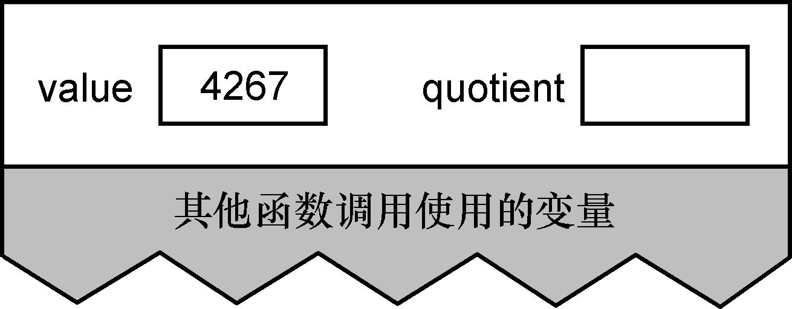
Después de realizar la operación de división, el contenido de la pila es el siguiente:
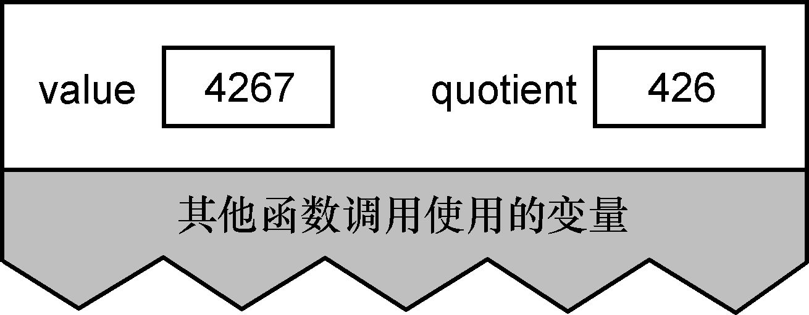
A continuación, la instrucción if determina que el valor del cociente es distinto de cero, por lo que realiza una llamada recursiva a la función. Cuando se llama a esta función por segunda vez, el contenido de la pila es el siguiente:
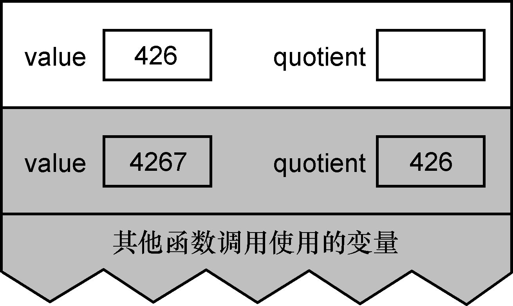
Se crea un nuevo lote de variables en la pila, ocultando el lote anterior de variables, y no se puede acceder a ellas a menos que regrese la llamada recursiva actual. Después de realizar la operación de división nuevamente, el contenido de la pila es el siguiente:
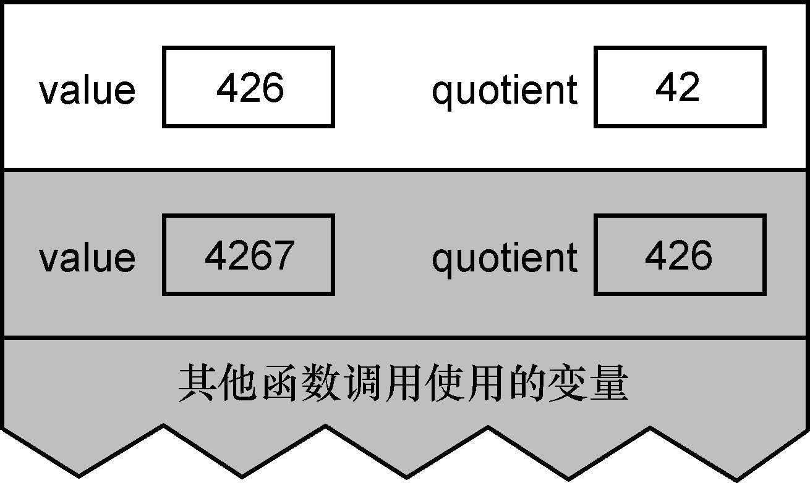
El valor del cociente ahora es 42, que sigue siendo distinto de cero, por lo que debe continuar la llamada recursiva y crear otro lote de variables. Después de ejecutar la operación de división de esta llamada, el contenido de la pila es el siguiente:
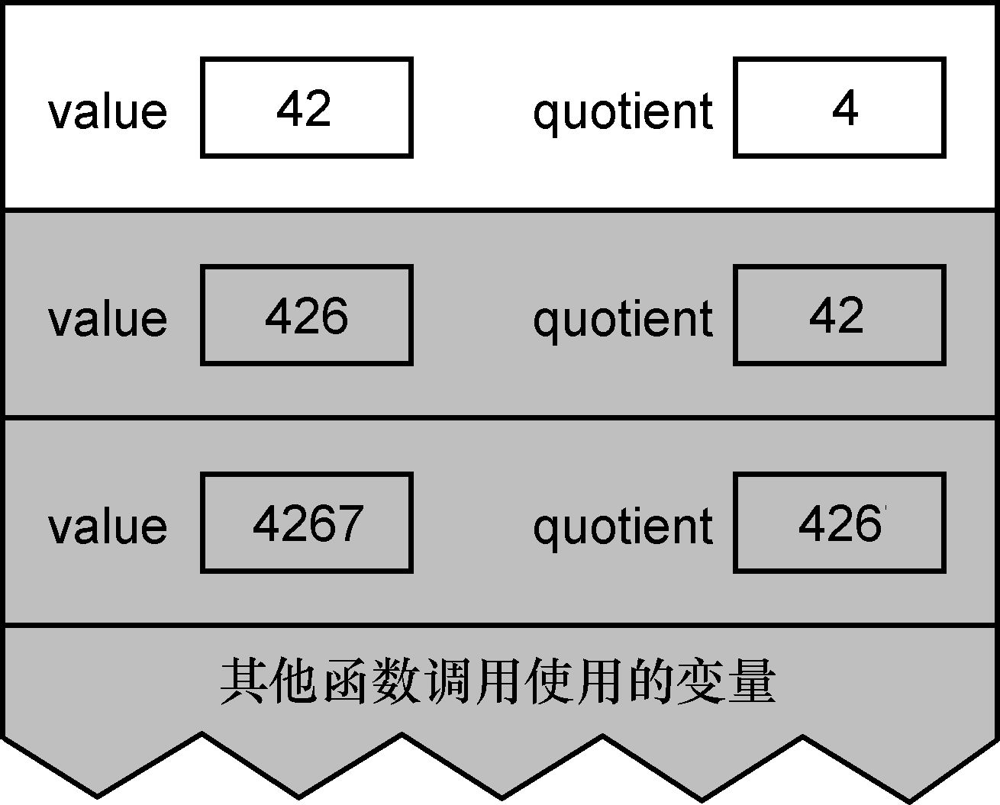
En este punto, el valor del cociente sigue siendo distinto de cero y la llamada recursiva sigue siendo necesaria. Después de realizar la operación de división, el contenido de la pila es el siguiente:
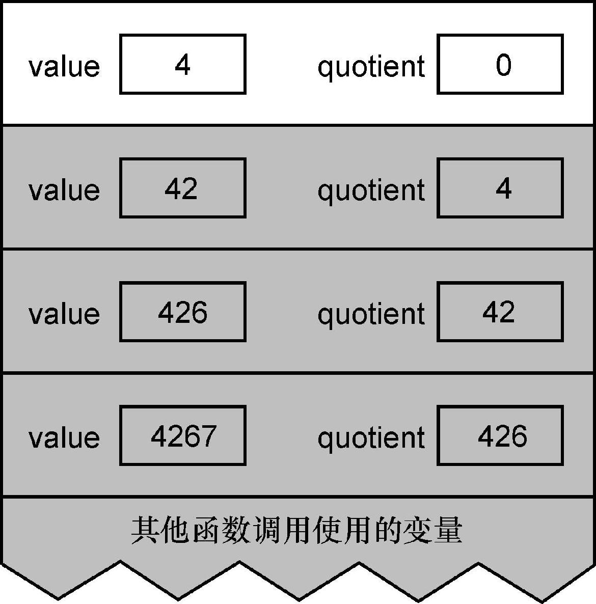
Sin contar la declaración de llamada recursiva en sí, las declaraciones ejecutadas hasta ahora son solo operaciones de división y prueban el valor del cociente. Debido a que la llamada recursiva hace que estas declaraciones se ejecuten repetidamente, su efecto es similar a un ciclo: cuando el valor del cociente es distinto de cero, el ciclo se reinicia con su valor como valor inicial. Sin embargo, la llamada recursiva guardará alguna información (esto es diferente del bucle), que es el valor de la variable guardada en la pila. Esta información pronto será muy importante.
Ahora que el valor del cociente se vuelve cero, la función recursiva ya no se llama a sí misma, sino que comienza a imprimir. Luego, la función regresa y comienza a destruir el valor de la variable en la pila.
Cada vez que llama a putchar para obtener el último número del valor de la variable, el método consiste en realizar una operación de resto de módulo 10 sobre el valor, y el resultado es un número entero entre 0 y 9. Agréguelo a la constante de carácter '0', y el resultado es el carácter ASCII correspondiente a este número, y luego imprima este carácter.
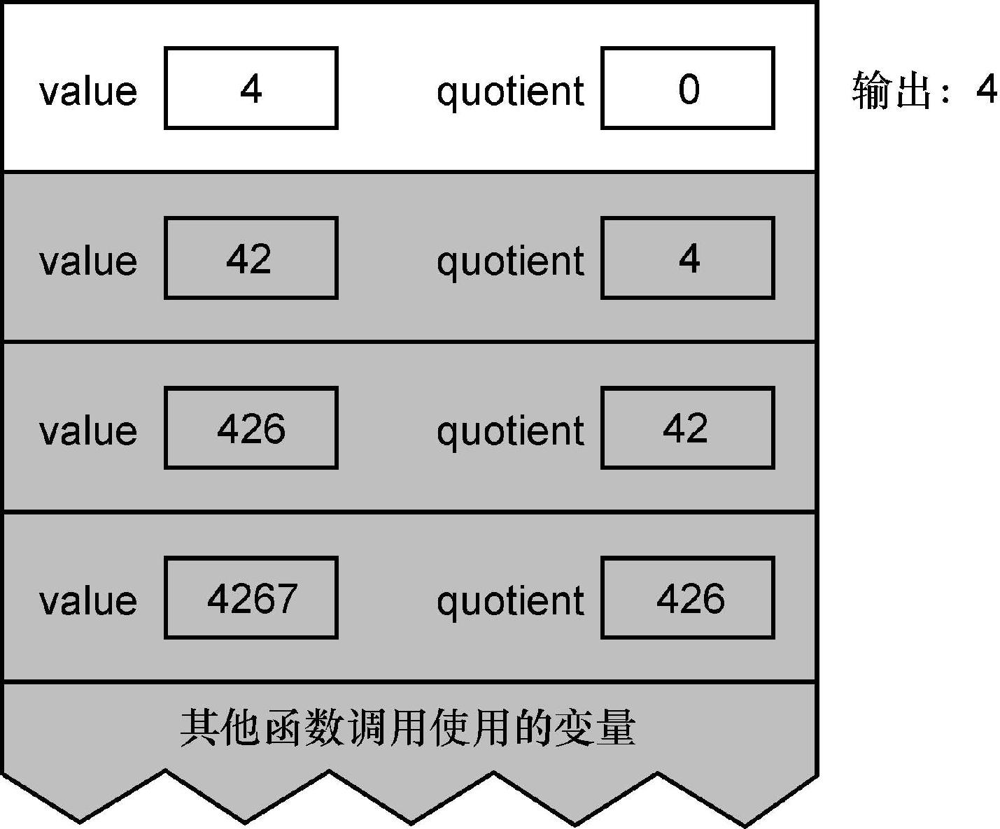
Luego, la función regresa y sus variables se destruyen de la pila. Luego, se reanuda la ejecución de la llamada anterior de la función recursiva, que utiliza sus propias variables, que ahora están en la parte superior de la pila. Debido a que su valor es 42, el número impreso después de llamar a putchar es 2.
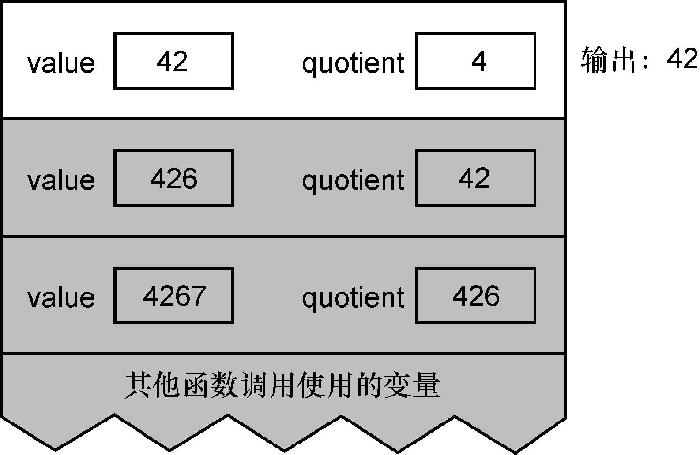
Entonces esta llamada de la función recursiva también regresa, y sus variables también son destruidas En este momento, la variable en la parte superior de la pila es la variable de la llamada anterior de la función recursiva. La llamada recursiva continúa desde esta posición y el número impreso esta vez es el 6. Antes de que regrese esta llamada, el contenido de la pila es el siguiente:
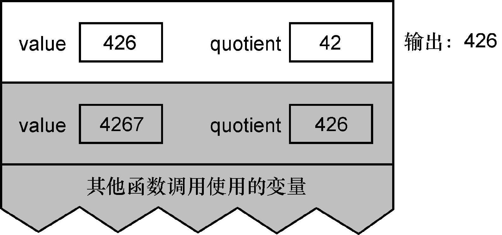
Ahora hemos expandido todo el proceso recursivo y regresamos a la llamada original de la función. Esta llamada imprime el número 7, que es el resto de su parámetro de valor dividido por 10.
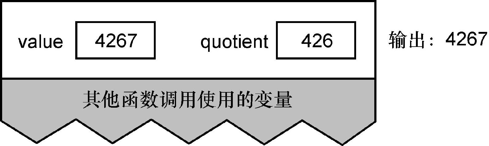
Entonces, esta función recursiva regresa completamente al lugar donde otras funciones la llamaron.
Si alinea los caracteres impresos uno tras otro y aparece en la impresora o en la pantalla, verá el valor correcto: 4267.
La recursividad es una técnica poderosa, pero al igual que otras técnicas, también se puede utilizar incorrectamente. Aquí hay un ejemplo. La definición de factorial a menudo se describe de forma recursiva, como se muestra a continuación:
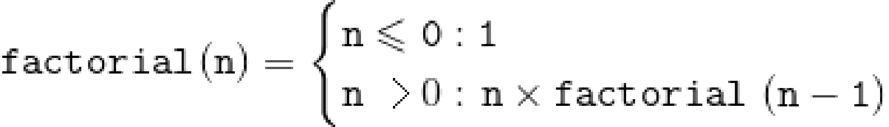
Esta definición también tiene las dos características que necesitamos para comenzar a discutir la recursividad: hay restricciones, cuando se cumple esta condición, la recursividad no continuará; después de cada llamada recursiva, se acerca cada vez más a esta restricción.
Definir factorial de esta manera a menudo lleva a las personas a usar la recursividad para implementar la función factorial, como se muestra en el Programa 7.7a. Esta función puede producir resultados correctos, pero no es un buen uso de la recursividad. ¿Por qué? Las llamadas de función recursivas implicarán algunos parámetros de sobrecarga en tiempo de ejecución que deben insertarse en la pila, espacio de memoria asignado para variables locales (toda recursividad es el caso, no específicamente para este ejemplo), los valores de registro deben guardarse, etc. Cuando regresa cada llamada de la función recursiva, las operaciones anteriores deben restaurarse al estado original. Por lo tanto, basado en estos costos, para este programa, no simplifica la solución al problema.
/*
** 用递归方法计算n的阶乘。
*/
long
factorial( int n )
{
if( n <= 0 )
return 1;
else
return n * factorial( n - 1 );
}Procedimiento 7.7a Calcular factorial de forma recursiva
fact_rec.c
El programa 7.7b usa un ciclo para calcular el mismo resultado. Aunque este programa que utiliza un bucle simple no se ajusta a la definición matemática anterior de factorial, puede calcular el mismo resultado de manera más eficiente. Si observa de cerca la función recursiva, encontrará que la llamada recursiva es la última tarea realizada por la función. Esta función es un ejemplo de recursividad de cola. Dado que la función no realiza ninguna tarea después de que regresa la llamada recursiva, la recursividad de cola se puede convertir fácilmente en un bucle simple para completar la misma tarea.
*
** 用迭代方法计算n的阶乘。
*/
long
factorial( int n )
{
int result = 1;
while( n > 1 ){
result *= n;
n -= 1;
}
return result;
}Procedimiento 7.7b Cálculo iterativo de factorial
fact_itr.c
insinuación:
Muchos problemas se explican de forma recursiva, simplemente porque es más claro que la forma no recursiva. Sin embargo, la implementación iterativa de estos problemas suele ser más eficiente que la implementación recursiva, aunque el código puede ser un poco menos legible. Cuando un problema es bastante complejo y difícil de implementar de forma iterativa, la simplicidad de la implementación recursiva puede compensar la sobrecarga de tiempo de ejecución que conlleva.
En el programa 7.7a, la recursividad no tiene ninguna ventaja para mejorar la legibilidad del código, porque el esquema de bucle del programa 7.7b también es simple. Aquí hay un ejemplo más extremo: el número de Fibonacci es una secuencia y el valor de cada número en la secuencia es la suma de los dos números anteriores. Esta relación se describe a menudo de forma recursiva:
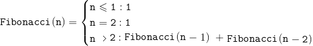
De manera similar, la definición de esta forma recursiva es fácil de inducir a las personas a usar la forma recursiva para resolver problemas, como se muestra en el Procedimiento 7.8a. Aquí hay una trampa: utiliza pasos recursivos para calcular Fibonacci (n-1) y Fibonacci (n-2). Sin embargo, Fibonacci (n-2) también se calculará cuando se calcule Fibonacci (n-1). ¿Cuál es el costo de este cálculo adicional?
La respuesta es: cuesta mucho más que un cálculo redundante: cada llamada recursiva desencadena otras dos llamadas recursivas, y cualquiera de estas dos llamadas también desencadenará dos llamadas recursivas, al igual que las llamadas posteriores. De esta forma, el número de cálculos redundantes crece muy rápido. Por ejemplo, al calcular Fibonacci (10) de forma recursiva, el valor de Fibonacci (3) se calcula 21 veces. Sin embargo, cuando Fibonacci (30) se calcula de forma recursiva, el valor de Fibonacci (3) se calcula 317 811 veces. Por supuesto, los resultados producidos por estos 317,811 cálculos son exactamente los mismos, excepto uno de ellos, el resto es puro desperdicio. ¡Esta sobrecarga adicional es realmente aterradora!
/*
** 用递归方法计算第n个菲波那契数的值。
*/
long
fibonacci( int n )
{
if( n <= 2 )
return 1;
return fibonacci( n - 1 ) + fibonacci( n - 2 );
}Procedimiento 7.8a Utilice la recursividad para calcular el número de Fibonacci
fib_rec.c
Ahora considere el programa 7.8b, que usa un ciclo simple en lugar de recursividad. De manera similar, esta forma cíclica no es tan buena como la forma recursiva que cumple con la definición abstracta del número de Fibonacci anterior, ¡pero su eficiencia aumenta cientos de miles de veces!
Antes de implementar una función usando la recursividad, pregúntese si los beneficios de usar la recursividad valen la pena. Y hay que tener cuidado: el precio puede ser mucho mayor de lo que parece a primera vista.
/*
** 用迭代方法计算第n个菲波那契数的值。
*/
long
fibonacci( int n )
{
long result;
long previous_result;
long next_older_result;
result = previous_result = 1;
while( n > 2 ){
n -= 1;
next_older_result = previous_result;
previous_result = result;
result = previous_result + next_older_result;
}
return result;
}Procedimiento 7.8b Utilice la iteración para calcular el número de Fibonacci
fib_iter.c
En el prototipo de función, se enumeran los parámetros que la función espera aceptar, pero el prototipo solo puede mostrar un número fijo de parámetros. ¿Está bien permitir que una función acepte diferentes números de parámetros en diferentes momentos? La respuesta es sí, pero existen algunas limitaciones. Considere una función que calcula el promedio de una serie de valores. Si estos valores se almacenan en una matriz, esta tarea es demasiado simple, por lo que para hacer el problema más interesante, asumimos que no están almacenados en una matriz. El programa 7.9a intenta realizar esta tarea.
Hay varios problemas con esta función. En primer lugar, no prueba el número de parámetros y no puede detectar que hay demasiados parámetros. Pero este problema es muy fácil de resolver, simplemente agregue la prueba. En segundo lugar, la función no puede manejar más de 5 valores. Para resolver este problema, solo puede agregar un código similar al código ya inflado.
Sin embargo, cuando intenta llamar a esta función de la siguiente forma, hay un problema más serio:
avg1 = average( 3, x, y, z );Solo hay 4 parámetros, pero la función tiene 6 parámetros formales. El estándar define esta situación de la siguiente manera: Las consecuencias de este comportamiento no están definidas. De esta manera, el primer parámetro puede corresponder a n_values, o puede corresponder al parámetro formal v2. Ciertamente puede probar cómo su compilador maneja esta situación, pero este programa obviamente no es portátil. Lo que necesitamos es un mecanismo que pueda acceder a un número indeterminado de listas de parámetros de una manera bien definida.
/*
** 计算指定数目的值的平均值（差的方案）。
*/
float
average( int n_values, int v1, int v2, int v3, int v4, int v5 )
{
float sum = v1;
if( n_values >= 2 )
sum += v2;
if( n_values >= 3 )
sum += v3;
if( n_values >= 4 )
sum += v4;
if( n_values >= 5 )
sum += v5;
return sum / n_values;
}Procedimiento 7.9a Calcular el valor medio de un parámetro escalar: la versión pobre
average1.c
La lista de parámetros variables se implementa a través de macros, que se definen en el archivo de encabezado stdarg.h, que es parte de la biblioteca estándar. Este archivo de encabezado declara un tipo va_list y tres macros-va_start, va_arg y va_end [4] . Podemos declarar una variable de tipo va_list y usarla con estas macros para acceder al valor del parámetro.
El programa 7.9b usa estas tres macros para completar correctamente la tarea que el programa 7.9a está tratando de realizar. Preste atención a los puntos suspensivos en la lista de parámetros: sugiere que el número y el tipo de parámetros pueden pasarse aquí. Al escribir el prototipo de esta función, use la misma notación.
La función declara una variable llamada var_arg, que se utiliza para acceder a la parte indeterminada de la lista de parámetros. Esta variable se inicializa llamando a va_start. Su primer parámetro es el nombre de la variable va_list, y el segundo parámetro es el último parámetro nombrado antes de los puntos suspensivos. El proceso de inicialización establece la variable var_arg para que apunte al primer parámetro de la parte del parámetro variable.
Para acceder a los parámetros, es necesario utilizar va_arg. Esta macro acepta dos parámetros: la variable va_list y el tipo del siguiente parámetro en la lista de parámetros. En este ejemplo, todos los parámetros de las variables son números enteros. En algunas funciones, es posible que deba determinar el tipo del siguiente parámetro a través de los datos obtenidos anteriormente [5] . va_arg devuelve el valor de este parámetro y hace que var_arg apunte al siguiente parámetro de variable.
Finalmente, cuando se accede al último parámetro de variable, necesitamos llamar a va_end.
Tenga en cuenta que se debe acceder a los parámetros variables uno por uno en orden de principio a fin. Si desea detenerse a la mitad después de acceder a algunos parámetros variables, está bien. Sin embargo, si desea acceder a los parámetros en el medio de la lista de parámetros desde el principio, eso no funcionará. Además, dado que la parte del parámetro variable en la lista de parámetros no tiene un prototipo, todos los valores pasados a la función como parámetros variables serán promovidos por tipos de parámetros predeterminados.
/*
** 计算指定数量的值的平均值。
*/
#include <stdarg.h>
float
average( int n_values, ... )
{
va_list var_arg;
int count;
float sum = 0;
/*
** 准备访问可变参数。
*/
va_start( var_arg, n_values );
/*
** 添加取自可变参数列表的值。
*/
for( count = 0; count < n_values; count += 1 ){
sum += va_arg( var_arg, int );
}
/*
** 完成处理可变参数。
*/
va_end( var_arg );
return sum / n_values;
}Procedimiento 7.9b Calcular el valor medio de los parámetros escalares: versión correcta
promedio2.c
También puede observar que debe haber al menos un parámetro con nombre en la lista de parámetros. Si ni siquiera tiene un parámetro con nombre, no puede usar va_start. Este parámetro proporciona una forma de encontrar la parte variable de la lista de parámetros.
Para estas macros, existen dos limitaciones básicas. El tipo de un valor no se puede juzgar simplemente comprobando su patrón de bits, estas dos restricciones son el resultado directo de este hecho.
1. Estas macros no pueden determinar el número de parámetros que existen realmente.
2. Estas macros no pueden determinar el tipo de cada parámetro.
Para responder a estas dos preguntas, debe utilizar parámetros con nombre. En el programa 7.9b, los parámetros con nombre especifican el número de parámetros que realmente se pasan, pero se supone que sus tipos son números enteros. El parámetro nombrado en la función printf es una cadena de formato, que no solo especifica el número de parámetros, sino que también especifica el tipo de parámetros.
advertir:
Si especifica el tipo incorrecto en va_arg, el resultado es impredecible. Este error es fácil de suceder porque va_arg no puede identificar correctamente la promoción del tipo de parámetro predeterminado aplicado a un parámetro variable. Los valores de tipo char, short y float se pasarán a la función como valores de tipo int o double. Por lo tanto, debe tener cuidado al usar estos últimos tipos en va_arg.
La definición de función describe tanto la lista de parámetros de la función como el cuerpo de la función (la instrucción que se ejecuta cuando se llama a la función) La lista de parámetros tiene dos formas aceptables. El estilo K&R C usa una lista separada para indicar el tipo de parámetro, que aparece antes de la llave de apertura del cuerpo de la función. El nuevo estilo (también el que ahora se defiende) incluye el tipo de parámetro directamente en la lista de parámetros. Si no hay declaraciones en el cuerpo de la función, entonces la función se llama stub, que es muy útil cuando se prueban programas incompletos.
La declaración de función proporciona información limitada sobre una función, que se utiliza cuando se llama a la función. También hay dos formas aceptables de declaraciones de funciones. El estilo K&R no tiene una lista de parámetros, solo declara el tipo de valor de retorno de la función. El nuevo estilo que se defiende en la actualidad también se denomina prototipo de función, que además del tipo de valor de retorno contiene la declaración del tipo de parámetro, que permite al compilador comprobar el número y tipo de parámetros al llamar a la función. También puede poner el nombre del parámetro en el prototipo de la función, aunque no es necesario, pero hacerlo puede hacer que el prototipo sea más útil para otros lectores, ya que transmite más información. Para funciones sin parámetros, su prototipo tiene una palabra clave vacía en la lista de parámetros. La forma común de usar el prototipo es poner el prototipo en un archivo separado.Cuando otros archivos fuente necesiten este prototipo, use la directiva #include para incluir este archivo. Esta técnica puede minimizar el número de copias necesarias para el prototipo y ayudar a mejorar la capacidad de mantenimiento del programa.
La declaración de retorno se utiliza para especificar el valor devuelto por una función. Si la declaración de devolución no contiene un valor de devolución, o la función no contiene ninguna declaración de devolución, entonces la función no tiene valor de devolución. En muchos otros lenguajes, estas funciones se denominan procedimientos. En ANSI C, el tipo de retorno de una función sin un valor de retorno debe declararse como nulo.
Cuando se llama a una función, si el compilador no puede ver ninguna de sus declaraciones, entonces asume que la función devuelve un valor entero. Para aquellas funciones cuyo valor de retorno no sea un entero, es muy importante declararlas antes de llamarlas, esto puede evitar errores causados por conversiones de tipos impredecibles. Para aquellas funciones sin un prototipo, los parámetros reales pasados a la función serán promocionados por defecto: los parámetros reales de los tipos char y short se convierten al tipo int, y los parámetros reales del tipo float se convierten al tipo double .
Los parámetros de la función se pasan por valor y lo que realmente pasa es una copia de los parámetros reales. Por lo tanto, la función puede modificar sus parámetros formales (es decir, una copia de los parámetros reales) sin modificar los parámetros realmente pasados por el programa de llamada. El nombre de la matriz también se pasa por valor, pero lo que pasa a la función es una copia del puntero a la matriz. En una función, si se utiliza una operación de referencia de subíndice en un parámetro de matriz, se activará una operación de acceso indirecto. Lo que en realidad accede es el elemento de matriz del programa que realiza la llamada. Por lo tanto, la modificación de los elementos de la matriz de parámetros en la función modifica realmente la matriz del programa que realiza la llamada. Este comportamiento se denomina llamada por dirección. Si desea tener la semántica de llamada por dirección al pasar parámetros escalares, puede pasar punteros a los parámetros de la función y usar el acceso indirecto en la función para acceder o modificar estos valores.
El tipo de datos abstracto, o caja negra, consta de dos partes: interfaz e implementación. La interfaz es pública y muestra cómo los clientes utilizan las funciones proporcionadas por ADT. La implementación es privada y es la parte que realmente realiza la tarea. Declarar la parte de implementación como privada puede evitar que el programa cliente confíe en los detalles de implementación del módulo. De esta forma, cuando sea necesario, podemos modificar la implementación sin afectar el código del programa cliente.
Las funciones recursivas se llaman a sí mismas directa o indirectamente. Para que la recursividad se desarrolle sin problemas, cada llamada de la función debe progresar y acercarse al objetivo. Cuando se alcanza la meta, la función recursiva ya no se llama a sí misma. Al leer funciones recursivas, no se preocupe por los detalles internos de las llamadas recursivas. Simplemente piensa que la función recursiva realizará su tarea programada.
Algunas funciones se describen de forma recursiva, como factorial y secuencia de Fibonacci, pero si se implementan de forma iterativa, la eficiencia será mayor. Si la última instrucción ejecutada dentro de una función recursiva es cuando se llama a sí misma, entonces se llama recursividad de cola. La recursividad de cola se puede reescribir fácilmente como un bucle y, por lo general, es más eficiente.
La lista de parámetros de algunas funciones contiene un número variable y tipos de parámetros, que se pueden implementar usando macros definidas en el archivo de encabezado stdarg.h. La parte variable de la lista de parámetros se encuentra después de uno o más parámetros comunes (parámetros con nombre), que se indica mediante puntos suspensivos en el prototipo de función. Los parámetros con nombre deben solicitar de alguna forma el número real de parámetros pasados por la parte variable, y también pueden proporcionar información sobre el tipo de parámetro si se conoce de antemano. Cuando los parámetros de la parte variable de la lista de parámetros se pasen realmente a la función, experimentarán la promoción de parámetros predeterminados. Solo se puede acceder a los parámetros de la parte variable de forma secuencial desde el primero hasta el último.
1. Escriba incorrectamente prototipos de funciones en el alcance de otras funciones.
2. No se escriben prototipos para funciones cuyo valor de retorno no sea un número entero.
3. Mezcle prototipos de funciones con definiciones de funciones antiguas.
4. El uso del tipo de parámetro incorrecto en va_arg conduce a resultados indefinidos.
1. El uso de nombres de parámetros en el prototipo de función puede proporcionar más información a los usuarios que utilizan la función.
2. Los tipos de datos abstractos pueden reducir la dependencia del programa de los detalles de implementación del módulo, mejorando así la confiabilidad del programa.
3. Esta herramienta se puede utilizar cuando las ventajas de una definición clara de recursividad pueden compensar sus gastos generales de eficiencia.
1. Las funciones con cuerpos de función vacíos
se pueden utilizar como apéndices. ¿Cómo modificas este tipo de función para que sea más útil?
2. En ANSI C, el prototipo de la función no es necesario. ¿Es esta regulación una ventaja o una desventaja?
3. Si está en la declaración de una función, su tipo de valor de retorno es A, pero el cuerpo de su función tiene una declaración de retorno que devuelve una expresión de tipo B. Disculpe, ¿cuáles son las consecuencias de esto?
4. Si el tipo de retorno de una declaración de función es nulo, pero su cuerpo de función contiene una declaración de retorno, se devuelve una expresión. Disculpe, ¿cuáles son las consecuencias de esto?
5. Si el compilador no puede ver el prototipo de una función antes de llamarla, ¿qué sucede cuando la función devuelve un valor que no es un número entero?
6. Si el compilador no puede ver el prototipo de una función antes de llamarla, ¿qué sucede si los parámetros que se le pasan realmente no coinciden con sus parámetros formales cuando se llama a la función?
7. ¿Hay algún error en las siguientes
funciones? Si es así, ¿qué pasa?
8. ¿En qué se parecen la recursividad y el
bucle while?
9. Explique las ventajas de colocar prototipos de funciones por separado en archivos #include.
10. En su sistema, ingrese la función de Fibonacci recursiva y agregue una declaración al comienzo de la función, que aumenta el valor de una variable entera global. Ahora escriba una función principal, establezca esta variable global en 0 y calcule Fibonacci (1). Repita este proceso para calcular Fibonacci (2) a Fibonacci (10). ¿Cuántas veces se llaman las funciones de Fibonacci (representadas por el valor de esta variable) durante cada proceso de cálculo? ¿Existe alguna conexión entre el aumento en el valor de esta variable global y la propia secuencia de Fibonacci? Con base en la información anterior, ¿puede calcular cuántas funciones de Fibonacci son llamadas por Fibonacchi (11), Fibonacci (25) y Fibonacci (50)?
★★ 1. Los polinomios hermitianos (polinomios
hermitianos) se definen de la siguiente manera:
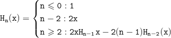
Por ejemplo, el valor de H 3 (2) es 40. Escriba una función recursiva para calcular el valor de H n (x). Su función debe coincidir con el siguiente prototipo:
int hermite( int n, int x)★★ 2. El máximo común divisor de dos valores enteros M y N (M y N son ambos mayores que 0) se puede calcular de la siguiente manera:
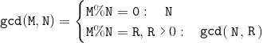
Escriba una función llamada gcd que acepte dos parámetros enteros y devuelva el máximo común divisor de estos dos números. Si alguno de estos dos parámetros no es mayor que cero, la función debe devolver cero.
★★ 3. Escriba una definición de función para el
siguiente prototipo de función:
int ascii_to_integer( char *string );Este parámetro de cadena debe contener uno o más números, y la función debe convertir estos caracteres numéricos en enteros y devolver este entero. Si el parámetro de cadena contiene caracteres no numéricos, la función devuelve cero. No se preocupe por el desbordamiento aritmético. Consejo : esta técnica es muy simple: cada vez que encuentre un número, multiplique el valor actual por 10 y agregue este valor al valor representado por el nuevo número.
★★★ 4. Escriba una función llamada lista_máx, que se usa para verificar cualquier número de parámetros enteros y devolver el valor máximo entre ellos. La lista de parámetros debe terminar con un valor negativo, lo que indica el final de la lista.
★★★★ 5. Implemente una función printf simplificada, que puede manejar códigos de formato% d,% f,% sy% c. Según los principios del estándar ANSI, el comportamiento de otros códigos de formato no está definido. Puede asumir que las funciones print_integer y print_float ya existen para imprimir este tipo de valores. Para los otros dos tipos de valores, use putchar para imprimir.
★★★★ 6. Función de escritura
void written_amount( unsigned int amount, char *buffer );Convierte el valor representado por la cantidad en una forma de palabra y lo almacena en el búfer. Esta función se puede utilizar en un programa que imprime cheques. Por ejemplo, si el valor de la cantidad es 16 312, entonces la cadena almacenada en el búfer debe ser
SIXTEEN THOUSAND THREE HUNDRED TWELVEEl programa que realiza la llamada debe asegurarse de que el espacio del búfer sea lo suficientemente grande.
Algunos valores se pueden imprimir de dos formas diferentes. Por ejemplo, 1 200 puede ser MIL DOSCIENTOS o DOCECIENTOS. Puedes elegir la forma que más te guste.
[1] Sería mejor si cada nombre, dirección y número de teléfono se almacenaran en una estructura, pero tenemos que esperar hasta el Capítulo 10 para describir la estructura.
[2] Curiosamente, el estándar no establece que la recursividad requiera una pila. Sin embargo, la pila es muy adecuada para implementar la recursividad, por lo que muchos compiladores usan la pila para implementar la recursividad.
[3] Estas relaciones requieren que los números sean continuos en el juego de caracteres. Todos los juegos de caracteres de uso común cumplen con este requisito.
[4] La macro es implementada por el preprocesador, que se discutirá en el Capítulo 14.
[5] Por ejemplo, printf comprueba los caracteres de la cadena de formato para determinar el tipo de parámetros que necesita imprimir.